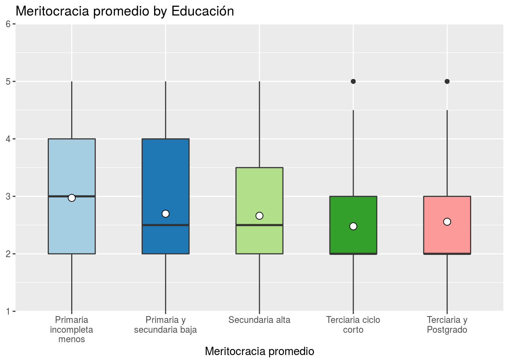

Ejemplo Artículo
1 Introducción
Solo para mostrar algunas tablas y gráficos
2 Descriptivos
Aquí una tabla descriptiva
| No | Variable | Label | Stats / Values | Freqs (% of Valid) | Graph | Valid | Missing | ||||||||||||||||||||||||||||||||||||||||||||||||||||||
|---|---|---|---|---|---|---|---|---|---|---|---|---|---|---|---|---|---|---|---|---|---|---|---|---|---|---|---|---|---|---|---|---|---|---|---|---|---|---|---|---|---|---|---|---|---|---|---|---|---|---|---|---|---|---|---|---|---|---|---|---|---|
| 1 | mesfuerzo [numeric] | Recompensa: esfuerzo | Mean (sd) : 2.6 (1) min < med < max: 1 < 2 < 5 IQR (CV) : 1 (0.4) |
|
 |
2909 (99.39%) | 18 (0.61%) | ||||||||||||||||||||||||||||||||||||||||||||||||||||||
| 2 | mtalento [numeric] | Recompensa: talento | Mean (sd) : 2.7 (1.1) min < med < max: 1 < 3 < 5 IQR (CV) : 2 (0.4) |
|
 |
2907 (99.32%) | 20 (0.68%) | ||||||||||||||||||||||||||||||||||||||||||||||||||||||
| 3 | ess [numeric] | Estatus Social Subjetivo | Mean (sd) : 4.3 (1.6) min < med < max: 0 < 5 < 10 IQR (CV) : 2 (0.4) | 11 distinct values |  |
2915 (99.59%) | 12 (0.41%) | ||||||||||||||||||||||||||||||||||||||||||||||||||||||
| 4 | edcine [numeric] | Educación | Mean (sd) : 3.2 (1.2) min < med < max: 1 < 3 < 5 IQR (CV) : 1 (0.4) |
|
 |
2925 (99.93%) | 2 (0.07%) | ||||||||||||||||||||||||||||||||||||||||||||||||||||||
| 5 | sexo [numeric] | Sexo | Min : 0 Mean : 0.6 Max : 1 |
|
 |
2927 (100%) | 0 (0%) | ||||||||||||||||||||||||||||||||||||||||||||||||||||||
| 6 | edad [numeric] | Edad | Mean (sd) : 46.1 (15.3) min < med < max: 18 < 46 < 88 IQR (CV) : 25 (0.3) | 63 distinct values |  |
2927 (100%) | 0 (0%) | ||||||||||||||||||||||||||||||||||||||||||||||||||||||
| 7 | pmerit [numeric] | Meritocracia promedio | Mean (sd) : 2.7 (1) min < med < max: 1 < 2.5 < 5 IQR (CV) : 1.5 (0.4) |
|
 |
2898 (99.01%) | 29 (0.99%) |
Generated by summarytools 0.9.6 (R version 4.0.0)
2020-08-04
Y aquí un gráfico
